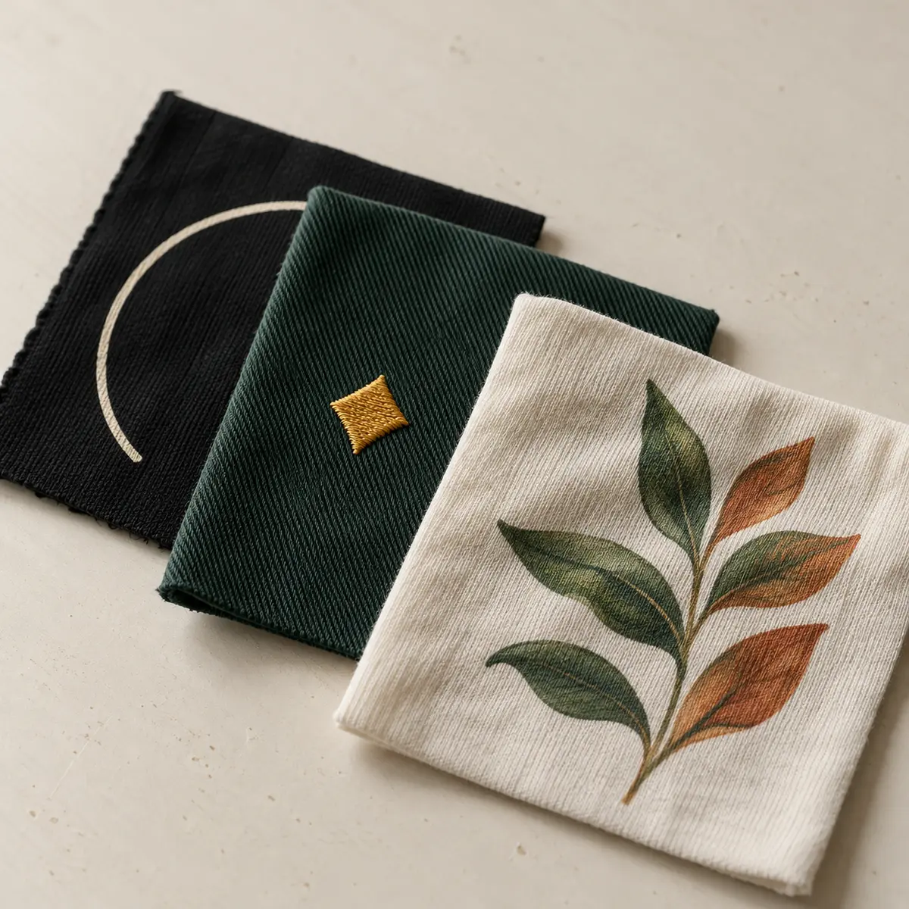

Ink / texture / impactScreen
Screen
printing
For bold graphics, consistent color and apparel runs with presence.
Explore screen printing01 / The disciplines
We keep the production language clear: choose the surface, texture and level of detail you want, then we help you build the right apparel order.

The MA2K system
Every method has a different personality. The right choice depends on your artwork, garment, quantity, placement and how you want the finished piece to feel.
For bold graphics, consistent color and apparel runs with presence.
Explore screen printing
For logos, lettering and marks that should feel built into the garment.
Explore embroidery
For color-rich art, personalization, fine lines and flexible quantities.
Explore DTF printingHow to choose
If you want a classic ink hand and strong graphic presence, start with screen printing. If you want a raised, polished mark, start with embroidery. If your artwork needs full color, gradients or individual personalization, start with DTF.

The finish is part of the messageThe quick read
A starting point for your project. Compare the finish, then send the garment, artwork and timing you have in mind.
Best for bold art, repeatable color and larger coordinated apparel runs.
Best for polos, caps, jackets, bags, uniforms and a raised premium finish.
Best for detailed full-color artwork, names, numbers and flexible quantities.
Start a project and describe the garment, artwork and deadline. We will guide you.
Made to be worn
Choose a method now or let the studio help you decide.